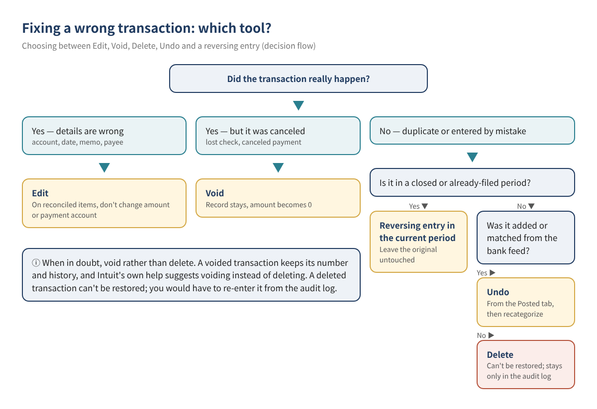
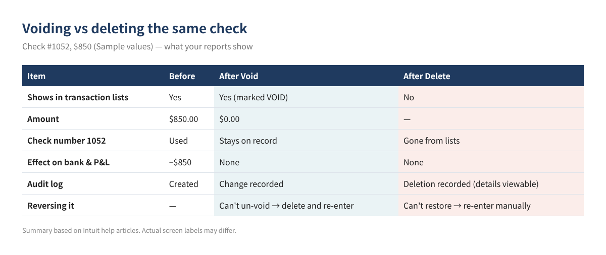
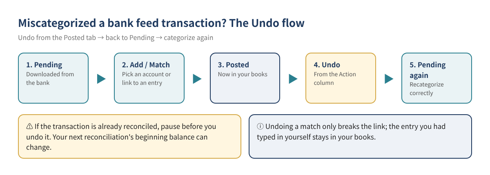
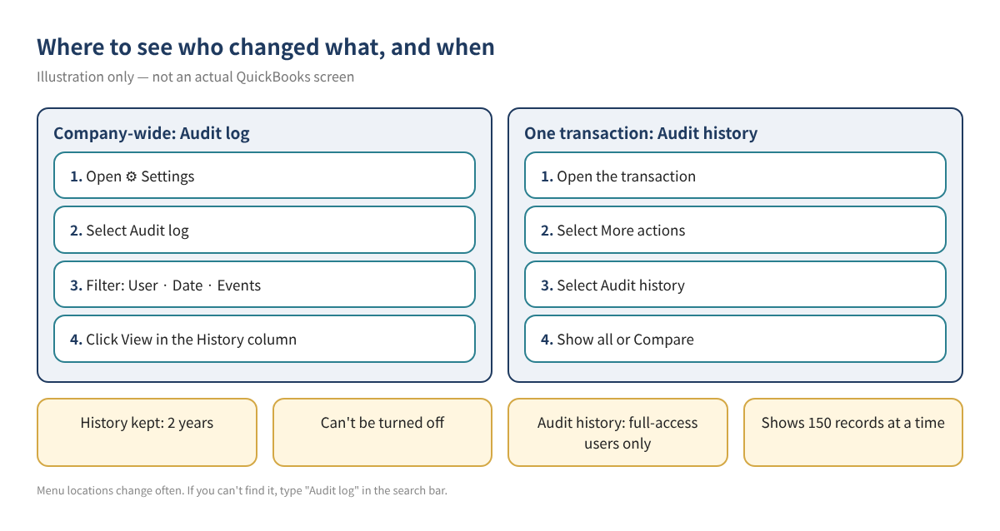

Made a Mistake in QuickBooks Online? When to Edit, Void, Delete or Undo a Transaction (and How to Check the Audit Log)
Every set of books has mistakes. A bill gets entered twice, a check is lost in the mail, a card-processor payout lands in the wrong account from the bank feed. The mistake itself is rarely the real problem. The fix is. Delete the wrong thing in a hurry and a reconciled balance stops matching the bank, last month's numbers change after your accountant already used them, and nobody can explain a gap in your check numbers a year later.
This guide walks through the five tools QuickBooks Online (QBO) gives you to correct a transaction: Edit, Void, Delete, Undo, and a reversing journal entry. It covers when each one is the right choice, step by step, and how to use the audit log to see who changed what and the Close the books setting to protect past periods. It expands on a topic introduced briefly in our QuickBooks Online basics guide.
Who this is for ☐ You have a duplicate transaction and aren't sure whether deleting it is safe ☐ You need to handle a lost or canceled check ☐ You categorized a bank feed transaction wrong and want to reverse it ☐ A reconciled month suddenly shows a different balance ☐ Several people work in your books and you want to know who changed what
1. The five tools at a glance
According to Intuit's help, a voided transaction stays on record but no longer affects your totals: its amount becomes zero and it is marked void. A deleted transaction is removed everywhere except the audit log. Both make a transaction "go away" in your reports, but the trail they leave is very different.
| Tool | What it does · record | Use it when | Watch out for |
|---|---|---|---|
| Edit | Changes the details; changes show in Audit history | Account, date, memo or payee is wrong | Avoid changing amount or payment account on reconciled items |
| Void | Sets the amount to zero; stays, marked VOID | Lost or canceled checks; payments that were issued and then canceled | A void can't be undone (delete and re-enter instead) |
| Delete | Removes it; kept only in the audit log | True duplicates, test entries | Can't be restored; you must re-enter it manually |
| Undo | Reverses a feed Add or Match; item returns to Pending | You picked the wrong account or match in the bank feed | Check the impact first if it's reconciled |
| Reversing JE | Posts the opposite entry now; original stays | The error is in a closed or already-filed period | Make sure the two entries net to exactly zero |

2. Edit: if only the details are wrong, fix them in place
The most common case is a real transaction with the wrong category, date, memo or payee. Open it, correct the field, and save. There is no reason to delete and re-create it, and doing so can break the link to an attached receipt or a bank feed match.
- Open the transaction from a list or by clicking it in a report.
- Correct the wrong field (Category, Payee, date, Memo).
- Select Save and close.
- If many transactions need the same change, see bulk reclassifying transactions with a journal entry rather than fixing them one by one.
Tip — leave the amount alone on reconciled transactions. Changing the amount or payment account of a transaction you already reconciled changes the beginning balance of your next reconciliation. Changing only the category does not affect the bank balance. If the amount itself is wrong, look at sections 4 and 6 first. If your balance is already off, finding duplicate transactions and reconciliation differences can help.
3. Void vs. Delete: what stays and what disappears
3-1. How to void
Intuit's help gives the following paths. The left menu changes often, so it is usually faster to type the transaction number or payee in the search bar and open the transaction directly.
- Sales transactions: Sales & Get Paid → Sales transactions. Expenses: Expenses & Bills → Expense transactions.
- Open the transaction and select More actions (or More).
- Select Void, then confirm with Void again.
Intuit lists which types can be voided: on the sales side, invoices, payments and similar; on the expense side, checks, expenses and bill payments. Other types may only show Delete in the More menu. If you don't see Void, pause and ask whether the transaction really should be deleted.
| Area | Types Intuit's help lists as voidable | Notes |
|---|---|---|
| Sales | Invoice, Payment, Sales order and similar | If the payment came through QuickBooks Payments, see 3-3 |
| Expenses | Check, Expense, Bill payment | Bills themselves are not on the list; check whether Void appears |
| Bank feed Excluded tab | Bulk Delete only | Per Intuit, bulk delete is offered only for excluded transactions |
3-2. How to delete, and what happens
Deleting uses the same More actions menu: choose Delete. Intuit is clear that a deleted transaction can't be restored. You find it in the audit log, read the original details, and re-enter it with its original date. There is no report that lists deleted transactions. That is why Intuit itself recommends voiding instead of deleting.
Keep in mind that a void can't be reversed either. If you void by mistake, Intuit's answer is to delete the voided transaction and enter it again.

3-3. Customer payments processed through QuickBooks Payments
If you took a card or ACH payment through QBO's payment service, voiding in the books also cancels the payment. Intuit explains that a void cancels a payment before it processes, while a payment that has already settled must be refunded instead. Per that help article, card batches close at 3:00 PM Pacific; cutoffs can change, so check the current help article before acting. Everyday refunds and credits are covered in invoices to payments: partial payments, discounts, refunds and credits.
4. Undo: fixing a bank feed categorization
If you clicked Add or Match on the wrong thing in the bank feed, the right fix is Undo, not delete. Using the Bank transactions screen covered in our bank feeds guide, Intuit's steps are:
- On Bank transactions, select the account tile.
- Open the Posted tab. Tab names can differ depending on your screen version.
- For a matched item, click the blue link in the "Added or Matched" column to see what it was matched to.
- Select Undo in the Action column. The item goes back to Pending (For review).
- From Pending, add it to the correct account or match it to the correct transaction.
Per Intuit, undoing a match only disconnects the two transactions and sends the downloaded item back to Pending. The entry you created yourself (an invoice payment, a bill payment) stays in your books, so re-match it or clean it up separately if it is no longer needed.

Caution — undoing reconciled items. Intuit advises talking to your accountant before unmatching a transaction that is already reconciled, because the change can have a big impact. You can un-reconcile a single transaction from the account register by clicking the R until it is blank, but know that this changes your next reconciliation's beginning balance.
5. When a whole reconciliation needs to be undone
If an entire month's reconciliation is wrong, you can undo it instead of fixing transactions one at a time. According to Intuit's help, this is available to the Primary admin, an In-house accountant, and an accountant user signed in through QuickBooks Online Accountant. Go to Reconcile → History by account, choose the account and date range, and select Undo from the Action dropdown.
- The reconciliation you pick and every later one are undone.
- The reconciliation report and its attachments are permanently deleted, so download the report first.
- For setting up these roles, see inviting staff and accountants and setting permissions.
6. Errors in a closed period: reverse, don't delete
Deleting or editing a transaction in a period you already filed taxes for, or already handed to your accountant, makes your books disagree with what was reported. Intuit's void a transaction from another period article describes leaving the original in place and recording a reversing journal entry dated the date you want the reversal to show.
- Look up the original entry's debits and credits: open it and choose More → Transaction journal.
- Open + New (or + Create) → Journal entry. Date it in the current open period (for example, the last day of this month).
- Use the same accounts as the original, with debits and credits swapped.
- Write a memo that identifies the original, such as "Reverse duplicate 9/18 expense," and save.
- If a bank account is involved, clear the original and the reversal together in the register. The two net to zero.
To keep anyone from changing past periods by accident, turn on Close the books. Per Intuit's help, go to ⚙ Settings → Account and settings → Advanced → Accounting to set a closing date and a password. Only admins can change this, and changes made after closing show on the Exceptions to Closing Date report (search for it under Reports).
7. The audit log: who changed what, and when
Per Intuit's help, open the audit log from ⚙ Settings → Audit log, then use Filter to narrow by User, Date and Events. Results show 150 records at a time, and View in the History column shows the details of a change. Sign-ins, settings changes and edits to customers, vendors and employees are logged too.
| Item | What Intuit's help says | What it means for you |
|---|---|---|
| Where | ⚙ Settings → Audit log | Or type "Audit log" in the search bar |
| Access needed | Active subscription + Admin access | Staff users may not see it |
| Can it be turned off? | No, for audit and security reasons | You can always find out who deleted something |
| How long kept | Recorded events are available for two years | Save reports for anything older you may need |
| One transaction's history | Open it → More actions → Audit history → Show all / Compare | Only full-access users can view it |
| Finding a deletion | Filter by event, search for "Deleted," click View | Read the details and re-enter with the original date |

8. Worked example: a fictional dry cleaner's October cleanup
Sunrise Cleaners, a fictional dry cleaner, closed its books through September 30. Reviewing October, the owner found five mistakes. All names and numbers are sample values.
| # | Problem found (Sample values) | Tool | What was done |
|---|---|---|---|
| 1 | Detergent supplier bill of $1,240 entered twice, 10/3 and 10/4 (both unpaid) | Delete | Checked the audit log for who entered each → deleted the later 10/4 copy |
| 2 | Check #1052 for $850 to a repair vendor lost in the mail, never cashed | Void | Voided #1052 → issued and recorded new check #1058 for $850 |
| 3 | Card-processor payout of $2,300 added from the feed as Other income | Undo | Undo from the Posted tab → re-added from Pending to the sales account |
| 4 | 10/12 expense of $96 coded to Office supplies (should be Repairs) | Edit | Changed only the category to Repairs & maintenance (amount unchanged) |
| 5 | Gas bill expense of $315 duplicated in closed September (left uncleared at reconciliation) | Reversing JE | 10/31 journal entry: debit Checking $315 / credit Utilities $315 |
After the cleanup, October Utilities drop by $315 and September's numbers stay exactly as filed. In the bank register, the duplicate September expense and the October reversal are cleared together so they net to zero. The duplicate bill was unpaid, so deleting it had no effect on the bank balance, and voiding the check keeps a record that explains the missing check number later.
| Check (Sample values) | Before | After |
|---|---|---|
| Accounts payable balance | $3,720 | $2,480 |
| October Utilities expense | $410 | $95 |
| October Sales (card sales) | $18,600 | $20,900 |
| October Other income | $2,300 | $0 |
| September P&L (closed period) | Unchanged | Unchanged |
9. Common mistakes
- Deleting reconciled transactions — next month's beginning balance breaks. Consider a void or reversing entry first.
- Deleting the copy of a duplicate that is linked to the bank feed — check which copy is matched or reconciled, and remove the one that is not.
- Deleting a lost check — the check number disappears and is hard to explain later. Void is the default.
- Leaving closed periods without a password — anyone can change last month. Set a Close the books password.
- Confusing Exclude with Delete in the bank feed — Exclude keeps a downloaded item out of your books; it does not remove a transaction that is already in them.
- Undoing and then leaving items in Pending — Pending items aren't in your books. Recategorize the same day.
10. FAQ
Can I recover a transaction I deleted by mistake?
Per Intuit, deleted transactions can't be restored. Find the deletion in the audit log, click View to see the details, and re-enter it with the original date. Transactions that were never saved don't appear in the audit log at all.
Can I un-void a transaction?
No. Intuit's guidance is to delete the voided transaction and enter it again. It is worth double-checking the number and amount before you void.
I think an employee deleted something. Can I check?
Yes. Open the audit log as an admin and filter by user and date. The audit log can't be turned off, and recorded events stay available for two years. If people share one login you can't tell who did what, so give each person their own user.
A transaction from last year is wrong. Can I just fix it?
If the return is already filed, changing last year's numbers makes your books disagree with it. The usual approach is to leave the original and post a reversing entry in the current period. Whether the return itself needs amending is a question for the tax professional who prepared it.
Does Undo in the bank feed delete the transaction?
For a match, it only breaks the link and sends the downloaded item back to Pending. The entry you created yourself stays in your books, so re-match it or clean it up separately.
11. Self-check checklist
- ☐ Before fixing, I asked whether the transaction really happened
- ☐ I checked whether it is reconciled or in a closed period
- ☐ Lost or canceled checks are voided, not deleted
- ☐ Bank feed errors are undone from the Posted tab and recategorized right away
- ☐ Closed-period errors are reversed in the current period with a clear memo
- ☐ Close the books has a closing date and a password
- ☐ Once a month I skim the audit log and the Exceptions to Closing Date report
- ☐ I download the reconciliation report before undoing a reconciliation
Related guides
- QuickBooks Online basics: 10 things to know when you start
- QBO bank feeds: Match, Add and Rules
- Invoices to payments: partial payments, discounts, refunds and credits
- Bills and accounts payable in QBO
- Recording credit cards and loans in QBO
- Users, permissions and two-step verification
- Find duplicate transactions and reconciliation differences
- Bulk reclassify transactions with a journal entry
- Clean up Undeposited Funds
This article is general educational information, not tax, legal or financial advice. Talk to a qualified professional about your specific situation. QuickBooks Online screens, menu names, plan features and prices change frequently, so check your current screens and Intuit's official guidance before making changes. All businesses, vendors and amounts in the examples are fictional.
QuickBooks is a registered trademark of Intuit Inc.; not affiliated with or endorsed by Intuit.
Sources
- Intuit QuickBooks Help: Void or delete transactions
- Intuit QuickBooks Help: Void a transaction from another period
- Intuit QuickBooks Help: Void or refund customer payments
- Intuit QuickBooks Help: Unmatch or move downloaded bank transactions
- Intuit QuickBooks Help: Undo or remove transactions from reconciliations
- Intuit QuickBooks Help: Undo an entire reconciliation
- Intuit QuickBooks Help: Use the audit log in QuickBooks Online
- Intuit QuickBooks Help: View transaction changes in the audit history
- Intuit QuickBooks Help: Use the audit log to re-enter deleted transactions
- Intuit QuickBooks Help: Edit your closed books